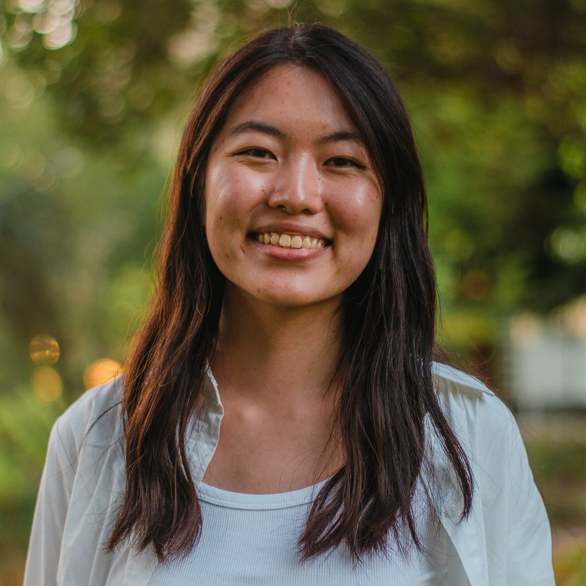

We're a group of Berkeley researchers passionate about innovating the future of chronic pain treament. Hover over each picture to learn more about us!
Timothy Brown, PhD
Principal Investigator
Very cool very cool very cool

Cindy Liu
Student Researcher
Cindy Liu
Cindy is a third-year at UC Berkeley studying English and Public Health. She's passionate about health equity. In her free time, you can catch her dogspotting around Berkeley or doing art.
Cindy Liu
Student Researcher
Cindy Liu
Cindy is a third-year at UC Berkeley studying English and Public Health. She's passionate about health equity. In her free time, you can catch her dogspotting around Berkeley or doing art.